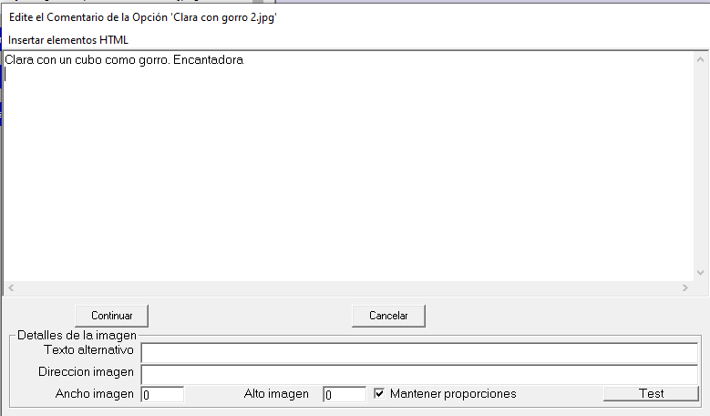
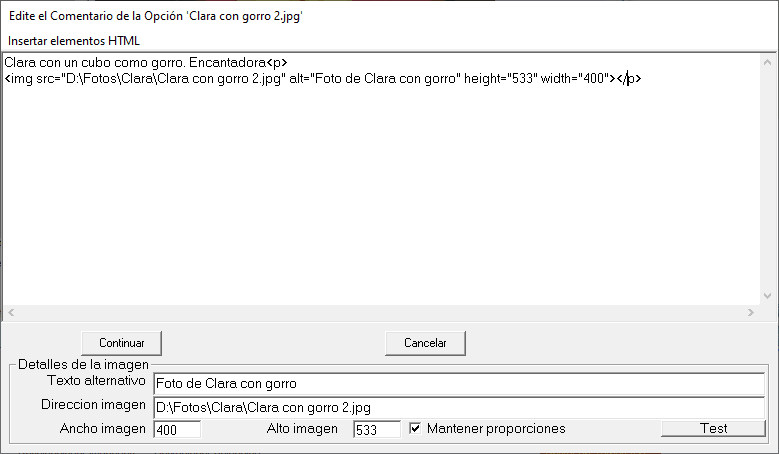
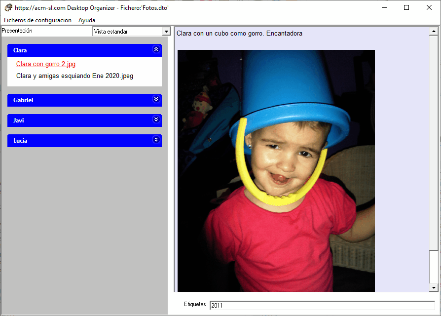

Agregar una imagen a un texto HTML requiere especificar varios parámetros. La opción "Añadir una imagen" cambia el formulario "Edite el Comentario ... " añadiendo los campos que se muestran en la siguiente figura:

Es necesario "arrastrar" hasta el campo "Dirección imagen" el fichero de la imagen. Automáticamente se rellenan los campos "Ancho imagen" y "Alto imagen" con los valores reales de la imagen en el fichero. Si se mantiene la caja "Mantener proporciones" marcada, si se cambia el "Ancho imagen" se modifica correspondientemente "Alto imagen" para mantener el factor de forma. De esta forma se puede adaptar el tamaño de la presentación de la imagen en el Comentario. Las medidas de la imagen son en "pixels".
Es necesario también rellenar el campo "Texto alternativo".
Se debe pulsar "Test" para que el texto modificado aparezca en el bloque de texto del formulario y también en el "Comentario" de la Vista estandar. Ambos quedan de la forma en que se muestran en las dos siguientes imágenes.

